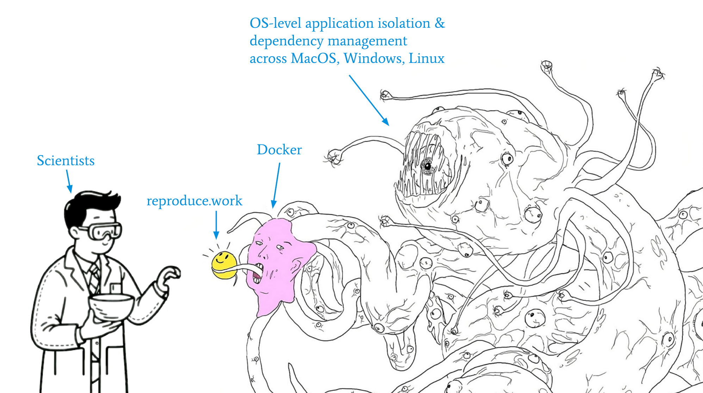

reproduce.work
reproduce.work is designed to be the simplest and most user-friendly interface available for running the most common scientific computing workflows in a fully cross-platform manner.
This project is based on a paradigm from software engineering called containerization, which is used extensively in applications that require code to be reliably executed across different computing environments and time periods.
However, reproduce.work provides a simple framework that abstracts away from underlying complexities and technical details of containerization, providing a streamlined workflow for truly reproducible science. This allows scientists to focus on their research, rather than the technical details of containerization.
Explained in meme format

Usage & Installation
After installing a container engine (i.e., Docker) reproduce.work can be used via a simple command-line interface that requires no interaction with the underlying containerization technology.
To learn more about how to use the framework, check out the Getting Started page:
Current release
This project is currently in an alpha release phase and serves as proof of concept for further development. Current support is offered for the following scientific environments:

Support for other common environments, including Stata, Matlab, and Julia, will be possible with future development.
Under the hood
In its current iteration, reproduce.work is a Node-based command line executable that is designed to be a user-friendly interface for:
- building and running common scientific container images,
- managing files and volume interactions with containers, and
- dealing with local port management.
-e
Getting Started
reproduce.work is being published as an alpha development release and should be considered experimental.
Pre-requisites
Knowledge:
- Users are expected to have basic familiarity with the command line interface (CLI) of their operating system. The following instructions are for users of Linux and macOS. Windows users should install Windows Subsystem for Linux and follow the instructions for Linux users.
Software:
- The reproduce.work ecosystem relies on containerization to facilitate cross-platform computing; as such, it is required that you install Docker (or a suitable drop-in replacement such as OrbStack; recommended for Apple Silicon machines). You do not need deep familiarity with Docker or containerization to use reproduce.work, but you will need to install Docker and ensure that it is running on your machine (which you can confirm by running
dockerin your preferred terminal).
Installation
The reproduce.work command line interface can be installed with following shell command:
Terminal
curl -sSL https://reproduce.work/install | bashYou will be prompted with two options:
- Install to your machine (in
/usr/local/bin) for use anywhere in your command line - Install to your current directory. This creates a folder in your current directory named
rw-project; with this choice, therwcommand line tools can only be executed at the root of your project directory (and you may need to replace anyrwcommand with./rw).
Besides containerization software and the reproduce.work CLI tool, no other software is required. All other dependencies will be installed inside a containerized environment automatically when you run the rw build command. If you adopt containerization in earnest, there is essentially no need to ever install Python, R, or any other scientific computing software on your machine again. A further benefit of containerized computing is that your reproduce.work projects will not interfere with each other or any other software you have installed on your machine.
Run with Docker
In its current form, the reproduce.work CLI is designed to be a user-friendly interface for:
- building and running common scientific container images,
- managing files and volume interactions with containers, and
- dealing with local port management.
These are common headaches for users of containers and are exactly the types of issues that reproduce.work is designed to automate. As such, outside of requiring a local installation, this tool does not assume that its users are familiar with Docker at all.
However, while the tool is in active development, its early adopters will likely have some familiarity with Docker. For such users, reproduce.work can be used as a set of developer tools to automate the handling of the tasks described above. The reproduce-work CLI has itself been developed with containerization in mind and can be used via its own Docker image without requiring direct installation of the reproduce.work binaries at all.
You can mount your current directory to the image and use the rw commands in interactive mode inside the container (with access to your machine’s files at $(pwd)):
Terminal
docker run --rm -it -v $(pwd):/app ghcr.io/reproduce-work/rw-cli:0.0.1You can also add an alias to your shell configuration as a shortcut to simulate a full installation via the tool’s Docker image:
.shellrc
alias rw='docker run -v $(pwd):/app ghcr.io/reproduce-work/rw-cli:0.0.1'After running source ~/.shellrc, you can use the rw command as if it was installed on your machine:
Terminal
rw --helpBasic Commands
There are THREE main commands in the reproduce.work workflow:
rw init: initialize a new projectrw build: download dependencies and install/package them in a self-contained environmentrw launch: launch your project’s scientific environment and begin working
Suggested usage:
Create a directory for your reproducible project:
Terminal
# Create a new directory for your project
mkdir my_project && cd my_project1. Initialize: rw init
By default, the rw init command will initialize a new project in your current directory. It is recommended that you create a new directory for each project, and run rw init from within that directory at the start of each project.
Options:
-s, --sci-env <env>: Set the scientific environment.- The currently supported options are:
jupyter(default)pythonrstudio
- The currently supported options are:
-f, --force: Force new configuration by overwriting existingconfig.tomlfile.
Depending on which options you choose, the way you build and launch your scientific environment will vary:
Terminal
# --sci-env=jupyter by default
rw init After running this command, you should see several files and folders added to your project directory:
Project directory structure
-
.reproduce/
- requirements.txt
- config.toml
- Dockerfile
- .gitignore
2. Build: rw build
After initializing a project, it must be “built”. This is the process of downloading the software required for running your project and packaging it in a container.
Options:
--no-cache: Download dependencies from the web without using locally cached versions. Default isfalse.-v, --verbose: Prints to console the output of your project’s build process. Default isfalse.
3. Develop: rw launch
This command starts your scientific computing environment and allows you to begin writing code and analyzing data.
Options:
-o, --open: Opens the scientific environment in your default browser. Default isfalse.-p, --port <port>: Set the local port for the jupyter server manually; otherwise, an open port will be found automatically.
Installing packages and dependencies
While in the scientific development environment, you can install packages in one of two ways:
Persistent: Add your desired packages on separate lines to
.reproduce/requirements.txtand runrw buildagain. After “building” your scientific environment, you can stop and restart it and your packages will be installed.Temporary: While your dev environment is running, you can use
pip install <module>; however keep in mind that modules/packages installed this way will not persist across sessions by default (i.e. if you stop and restart your scientific environment, you will need to reinstall them). This method is suitable for development/testing, but packages that are core to your project should be added to.reproduce/requirements.txt.
Terminal
rw init --sci-env=pythonAfter running this command, you should see several files and folders added to your project directory:
Project directory structure
-
.reproduce/
- requirements.txt
- config.toml
- Dockerfile
- .gitignore
2. Build: rw build
After initializing a project, it must be “built”. This is the process of downloading the software required for running your project and packaging it in a container.
Options:
--no-cache: Download dependencies from the web without using locally cached versions. Default isfalse.-v, --verbose: Prints to console the output of your project’s build process. Default isfalse.
3. Develop: rw launch
This command starts your scientific computing environment and allows you to begin writing code and analyzing data.
Options:
-o, --open: Opens the scientific environment in your default browser. Default isfalse.-p, --port <port>: Set the local port for the jupyter server manually; otherwise, an open port will be found automatically.
Installing packages and dependencies
While in the scientific development environment, you can install packages in one of two ways:
Persistent: Add your desired packages on separate lines to
.reproduce/requirements.txtand runrw buildagain. After “building” your scientific environment, you can stop and restart it and your packages will be installed.Temporary: While your dev environment is running, you can use
pip install <module>; however keep in mind that modules/packages installed this way will not persist across sessions by default (i.e. if you stop and restart your scientific environment, you will need to reinstall them). This method is suitable for development/testing, but packages that are core to your project should be added to.reproduce/requirements.txt.
Terminal
rw init --sci-env=rstudioAfter running this command, you should see several files and folders added to your project directory:
Project directory structure
-
.reproduce/
- packages.R
- config.toml
- Dockerfile
- .gitignore
2. Build: rw build
After initializing a project, it must be “built”. This is the process of downloading the software required for running your project and packaging it in a container.
Options:
--no-cache: Download dependencies from the web without using locally cached versions. Default isfalse.-v, --verbose: Prints to console the output of your project’s build process. Default isfalse.
3. Develop: rw launch
This command starts your scientific computing environment and allows you to begin writing code and analyzing data.
Options:
-o, --open: Opens the scientific environment in your default browser. Default isfalse.-p, --port <port>: Set the local port for the jupyter server manually; otherwise, an open port will be found automatically.
Installing packages and dependencies
While in the scientific development environment, you can install packages in one of two ways:
Persistent: Add your desired packages on separate lines to
.reproduce/packages.Rand runrw buildagain. After “building” your scientific environment, you can stop and restart it and your packages will be installed.Temporary: While your dev environment is running, you can use
install.packages(<pkg>); however keep in mind that modules/packages installed this way will not persist across sessions by default (i.e. if you stop and restart your scientific environment, you will need to reinstall them). This method is suitable for development/testing, but packages that are core to your project should be added to.reproduce/packages.R.